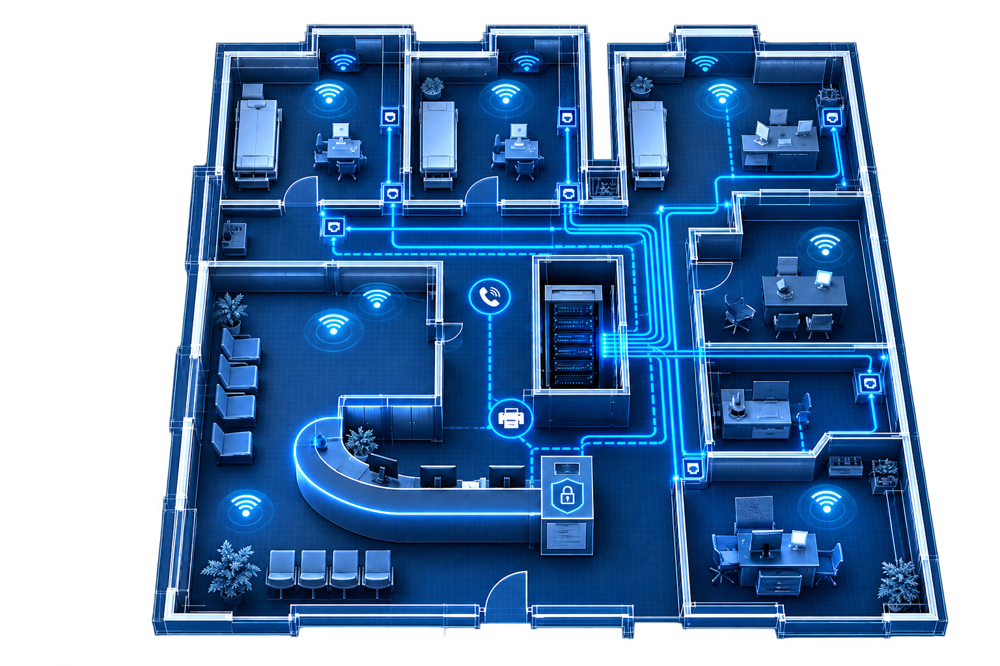

Erste IT-Projekte, Wachstum über Empfehlungen
Vertrauen entsteht dort, wo Probleme wirklich gelöst werden. Empfehlungen wurden zum wichtigsten Weg.
Die netzwerft verbindet medizinische IT-Kompetenz mit persönlicher Betreuung. Ein Team, ein Ansprechpartner und ein gemeinsames Ziel: Technik, die den Praxisalltag einfacher macht.
Medizin-IT aus einer Hand – für Arztpraxen im Raum Karlsruhe, Ettlingen und Speyer.

Über Empfehlungen gewachsen, mit klarem Fokus auf Arztpraxen: aus einzelnen IT-Aufträgen wurde die Rolle als Partner für die komplette technische Praxisumgebung.
Das Team kennenlernenDie Idee hinter der netzwerft hat sich mit den Anforderungen der Praxen weiterentwickelt – nicht als Firmenchronik, sondern als klarere Rolle im Praxisalltag.
Vertrauen entsteht dort, wo Probleme wirklich gelöst werden. Empfehlungen wurden zum wichtigsten Weg.
Arztpraxen brauchen andere Antworten als klassische Büro-IT. Praxisabläufe rückten in den Mittelpunkt.
Praxissoftware gehört nicht daneben, sondern hinein: Einführung, Migration und Betrieb werden mit IT, Telefonie und Infrastruktur verbunden.
Statt isolierter Gewerke entsteht ein gemeinsames Bild: Technik, die im Praxisalltag zusammenspielt.
Von Praxisgründung & Neubezug bis zum stabilen Betrieb: ein Ansprechpartner, der den Überblick behält.
Eine Arztpraxis hat oft verschiedene Ansprechpartner für IT, Telefonie, Praxissoftware, Netzwerk, Security und medizinische Infrastruktur. Genau diese Komplexität wollen wir reduzieren.
Themen werden zwischen Herstellern und Dienstleistern hin- und hergeschoben. Die Übergänge bleiben bei Ihnen.
Wenn mehrere technische Bereiche zusammenspielen müssen, behalten wir den Faden – statt Sie zwischen Ansprechpartnern vermitteln zu lassen.
Ergebnis: klarere Zuständigkeiten und weniger Abstimmungschaos.
Technik ist austauschbar. Menschen, Verantwortung und Zusammenarbeit sind es nicht. Hinter Support, Projekten und Praxissoftware stehen Ansprechpartner, die erreichbar bleiben.
Als Geschäftsführer der die netzwerft GmbH steht Simon Fuß für die Richtung des Unternehmens: Medizin-IT nicht als Produktkatalog denken, sondern als Verantwortung für den Praxisalltag.
Die tägliche Betreuung Ihrer Praxis läuft über spezialisierte Ansprechpartner. Namen und Portraits des Teams ergänzen wir hier, sobald die Freigaben vorliegen.
Planung, Umsetzung und Koordination über mehrere technische Themen hinweg.
Einführung, Migration und Betrieb – abgestimmt auf die übrige Praxisumgebung.
Persönlich erreichbar, wenn etwas hakt – ohne anonyme Ticketfabrik.
Kommunikation, die zum Praxisablauf passt und mit der IT zusammenspielt.
Probleme werden nicht weitergereicht. Wir lösen sie.
Wer eine Praxis betreut, muss verstehen, was Stillstand bedeutet.
Technik erklären wir so, dass Sie Entscheidungen treffen können.
Wie wir intern zusammenarbeiten, spüren Sie auch als Kunde: kurze Wege, direkte Kommunikation und Menschen, die Verantwortung übernehmen.
Vertrieb vorne, Technik irgendwo hinten, Tickets ohne Gesicht: genau das erschwert Abstimmung – intern wie mit der Praxis.
Wir spezialisieren uns auf Medizin-IT, arbeiten eng zusammen und bleiben für Ihre Praxis greifbar – vom ersten Gespräch bis zur laufenden Betreuung.
Keine Poster-Werte. Sondern konkrete Haltung im Projekt, im Support und in der Abstimmung mit Ihnen.
Wir schieben Probleme nicht zwischen Herstellern, Dienstleistern und Gewerken hin und her. Wenn Netzwerk, Praxissoftware und Telefonie zusammenspielen müssen, behalten wir den Überblick – statt Sie zwischen mehreren Ansprechpartnern vermitteln zu lassen.
Klare Zuständigkeiten. Klare Rückmeldungen. Klare nächste Schritte. Sie sollen wissen, wer zuständig ist, was als Nächstes passiert und was entschieden werden muss.
Medizinische IT funktioniert anders als klassische Büro-IT. Praxisabläufe, TI, KIM, Datenschutz und Softwareprozesse gehören für uns zum Alltag.
Hinter Support stehen Menschen. Persönliche Ansprechpartner und langfristige Zusammenarbeit statt anonymer Prozesse.
Nicht erst reagieren, wenn etwas nicht funktioniert. Gerade bei Praxisgründung, Neubezug oder Softwarewechsel frühzeitig planen.
Praxis, netzwerft und externe Projektpartner arbeiten nicht nebeneinander, sondern miteinander.
Ob Gründung, Softwarewechsel oder laufende Betreuung: Der Weg bleibt nachvollziehbar.
Nicht mit Technik beginnen. Zuerst Praxis, Team, Abläufe, Ausgangslage und Ziel verstehen.
Technische Bereiche gemeinsam betrachten, statt isolierte Lösungen zu verkaufen.
Klare Zuständigkeiten und Koordination der beteiligten Themen bis zum Go-live.
Nach Installation oder Go-live nicht verschwinden. Support und Weiterentwicklung bleiben.
Unsere Stärke liegt dort, wo Praxisalltag, Technik und Verantwortung zusammenkommen.
Kurze Einstiege zu Checkliste, Netzwerk und Praxissoftware. Aktuell noch als Platzhalter, ausführliche Beiträge folgen.

PlatzhalterWas Sie technisch klären sollten, bevor Handwerker, Gewerke und Termine ineinandergreifen.
Beitrag lesenVerkabelung, WLAN und Arbeitsplätze so planen, dass der Praxisalltag von Tag eins funktioniert.
Beitrag lesen Platzhalter
Platzhalter
Software, TI und KIM so vorbereiten, dass der Start nicht an der Technik hängen bleibt.
Beitrag lesenUnser Job ist nicht, Technik kompliziert zu erklären. Unser Job ist, sie zuverlässig zum Laufen zu bringen.
Wer Medizin-IT spannend findet, Verantwortung übernehmen möchte und keine Lust auf starre Systemhaus-Strukturen hat, kann sich die offenen Stellen ansehen.
Gute Zusammenarbeit beginnt nicht mit einem Angebot, sondern mit einem Gespräch darüber, was Sie wirklich brauchen.
Oder direkt anrufen: 07243 350600